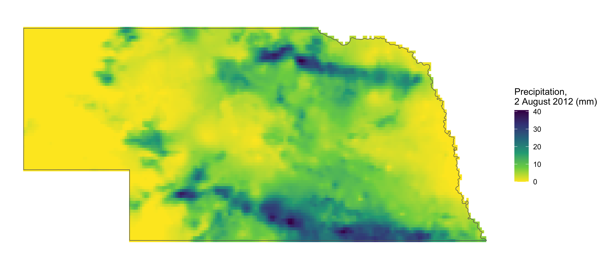
A map is a figure in which position means place. Everything in lecture 04-1 about figures applies: a map exists to convey one fact or idea to a reader. An AI assistant can draw any map in seconds. What it cannot know is:
So today is about:
sf, terra, tidyterra and tidyverse if you have not already.Before any map, write the one sentence the reader should take away, and who the reader is (lecture 04-1). Then ask: is the sentence about where? A map makes location easy to see and almost everything else hard: comparing two counties’ values on a map means matching two shades of colour against a legend.
| The message is about | Best figure |
|---|---|
| Where something is high or low, or a pattern across space | A map |
| Which places rank highest, or how two places compare | A sorted bar or dot chart |
| How a value changes over time | A line chart, or a few maps if the change is about where |
“On 2 August 2012, rain fell in two bands, one across the south of Nebraska and one across the north-east, while the west stayed dry.”

The pattern across the state is the message, and only a map shows it.
“Custer County harvested the most corn acres in Nebraska in 2023.”
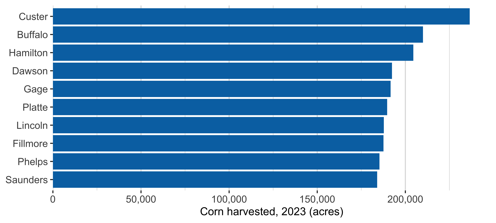
A ranking. On a map, the reader would have to find ten counties and compare their shades; sorted bars make it a glance.
Places on a map differ in size, and the eye reads area. A large county with a middling value covers more of the page than a small county with a high one. So the choice of what to map is part of the message:
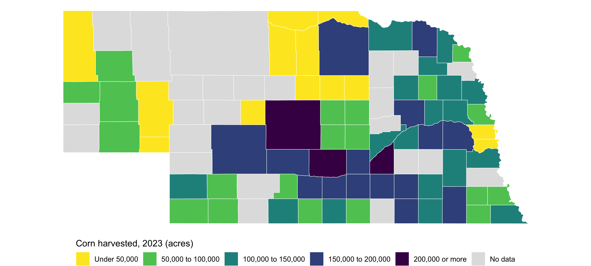
Custer County, the largest total at 236,500 acres, is also one of the largest counties: corn covers only 14% of its land.
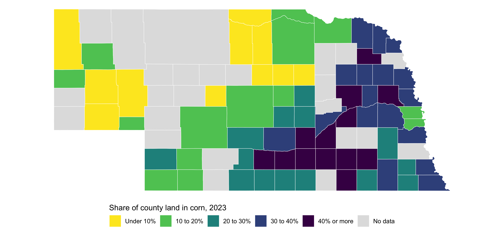
Hamilton County has the highest share, 59%. Same data, a different map, and a different message. Neither is wrong; only the message decides.
You will not write map code from memory. You need to look at any map code the AI writes and say which layer is drawn, and which column is shown by what. A map in ggplot2 has the same shape as any figure in lecture 04-1, with one difference: each layer usually has its own data.
| Part | What it is | Required? |
|---|---|---|
ggplot() |
Starts the figure. Often empty, because each layer brings its own data | Yes |
geom_sf(data = layer, ...) |
Draws one vector layer. Points, lines or polygons, decided by the layer’s geometry type | Yes, at least one layer |
aes(fill = column) |
Which column sets the colour: fill is the inside of a polygon, colour a point, a line or a polygon’s border |
No; without it every feature is the same colour |
+ |
Adds the next layer. Later layers are drawn on top | Between layers |
scale_fill_...() |
The colours, and the legend title | No; each has a default |
labs(), theme_void() |
Titles; theme_void() removes axes, gridlines and background |
No |
How to tell you can read it: for any map code, you can list the layers from bottom to top, and say which column sets the colour of each.
| Mark | In the code | What it draws |
|---|---|---|
| Vector layer | geom_sf(data = layer) |
Polygons, lines or points, whichever the layer holds |
| Raster | geom_spatraster(data = raster) (from tidyterra) |
One coloured square per cell; the fill is the cell value |
| Text | geom_sf_text(data = layer, aes(label = column)) |
A label at the centre of each feature |
| Small maps | facet_wrap(~ year) |
One map per value of a column, with one shared colour scale |
Settings outside aes(), such as colour = "white" or linewidth = 0.2, are the same for every feature: they do not carry information.
The share map from the previous slide, with the wells added. corn_2023 has one row per county (all 93) with 2023 acres, and share_class, the share of the county’s land in corn cut into five classes plus “No data”.
ggplot() +
geom_sf(data = corn_2023, aes(fill = share_class), colour = "white", linewidth = 0.2) +
geom_sf(data = wells, shape = 21, fill = "white", colour = "grey20", size = 1) +
scale_fill_manual(values = share_colours, name = "Share of county land in corn, 2023") +
theme_void() +
theme(legend.position = "bottom")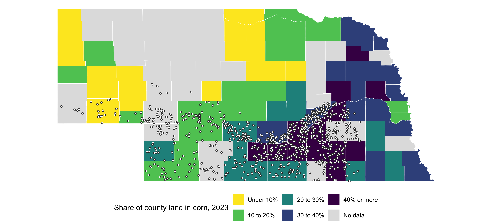
| Layer, bottom to top | Data | Shown by |
|---|---|---|
| Counties | corn_2023 |
share_class sets the fill; borders white and thin for every county |
| Wells | wells |
one small white point with a dark outline per well, visible on light and dark counties alike; no column shown |
ggplot2 transforms the others as it draws, so a map can combine layers in different CRSs and still line up. That does not make them safe to combine in a calculation (lecture 09-1).coord_sf(crs = 26914) added to the code draws the whole map in another CRS.ggplot(layer) + geom_sf(aes(fill = column)), with the data in ggplot(). It means the same; any layer without its own data = then uses that table.The same three kinds of colour scale as in lecture 04-1, with the same rule: the kind of value decides.
| The value is | Scale | Example |
|---|---|---|
| An amount, from low to high | One hue, light to dark (sequential) | acres, share of land, precipitation |
| Above or below a meaningful midpoint | Two hues, diverging from a neutral middle at the midpoint | change since 2020, with no change at the middle |
| A category | Distinct hues | land-cover type, irrigated or not |
All scales on these slides are from the viridis and ColorBrewer families, which colour-blind readers can tell apart.
“Between 2020 and 2023, corn acres fell in most counties that report both years.”
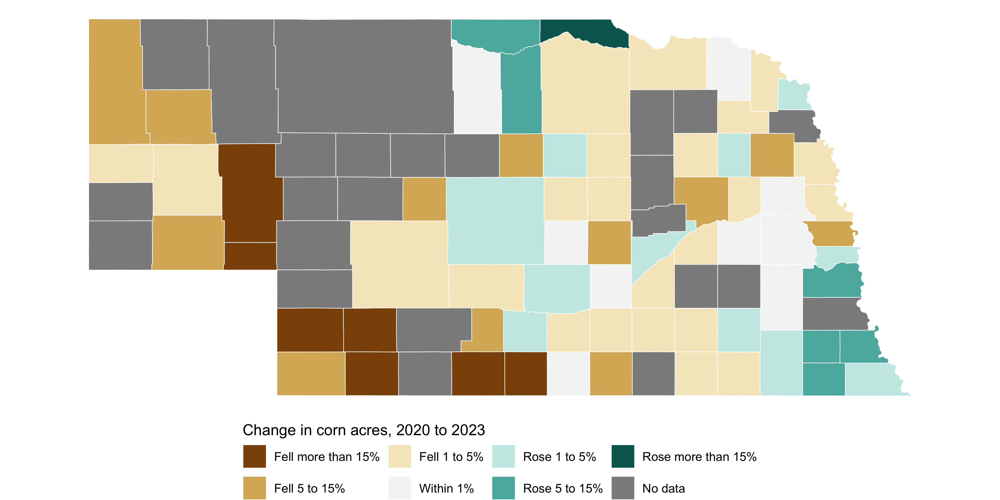
Brown for a fall, blue-green for a rise, white for a change within 1%, with the classes symmetric around zero. 23 of the 69 counties with both years rose. The 24 counties without both years are a darker grey, because light grey is too close to the white middle.
Use classes when the reader needs to read values off the map; a continuous scale when the overall pattern is the message. Five or six classes are as many as a reader can tell apart. In ggplot2, the legend of a continuous scale has no entry for missing values, which is one more reason the maps on these slides use classes: “No data” can be one of them.
In the 2023 data, only 69 of Nebraska’s 93 counties report corn acres. If the map is drawn from the corn table alone, the other 24 are simply not there:
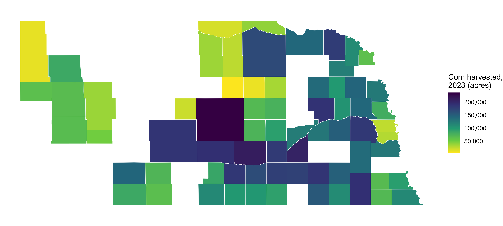
The reader sees a state with pieces missing, or, on a white page, reads the gaps as “no corn”. Neither is what the data says: the data says nothing about those counties.
Start from all the places (the county layer), join the values to it, and give the places without a value a class of their own, “No data”, named in the legend. Every map of corn acres from the “What to map” slide on is drawn this way. The step that keeps every county:
The layer comes first, so all 93 counties stay, and the 24 without a 2023 value get NA.
theme_void() removes them. Keep them only if the reader needs to read coordinates.ggspatial package): only when distance or direction matters to the message, or the area is unfamiliar to the reader.Layers drawn later sit on top, so the layer that carries the message goes last. With many points, small points let the reader see where they crowd together:
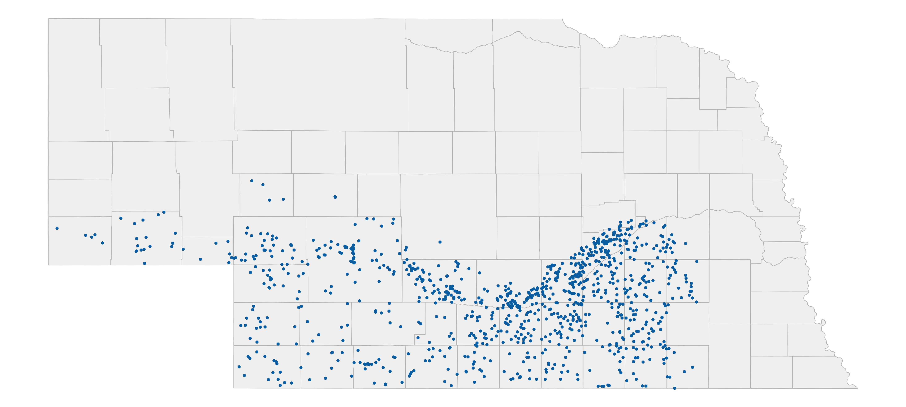
The counties are context, so they are light; the wells are the message, so they are the darkest thing on the map.
Several maps of the same variable, such as one per day, must share one colour scale, or the same colour means different values in different maps. facet_wrap() does that by default:
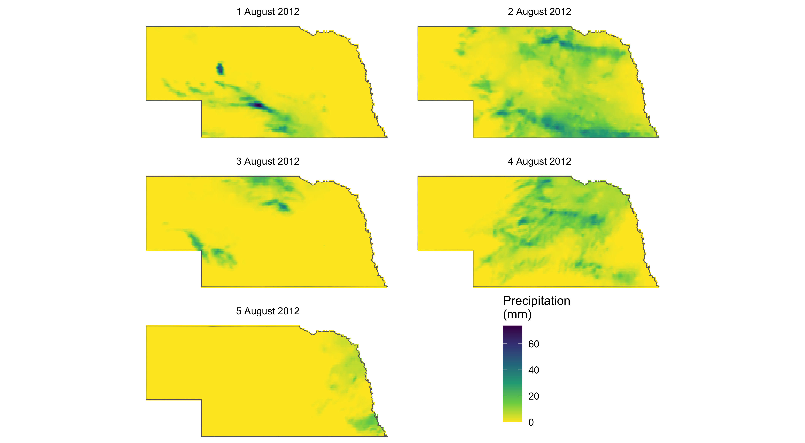
Five days, one scale, no-data cells transparent, and the legend in the empty sixth panel.
A map is a figure, so it must meet the figure standard from lecture 04-1. On top of that, every map must meet this standard. Each item has a yes or no answer.
The copyable version, to add to every map request after the figure standard, is in Recommended requests at the end of this deck.
Message: “In 2023, corn covered the largest share of land in south-central and eastern Nebraska.” Reader: an extension audience who knows the state.
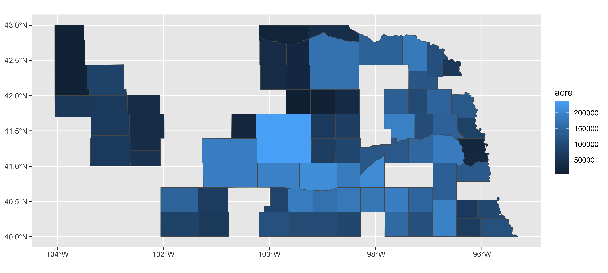
A deliberately bad example: what comes back when a request names only the data and the year.
ggplot(corn_2023) +
geom_sf(aes(fill = share_class), colour = "white", linewidth = 0.2) +
scale_fill_manual(values = share_colours, name = "Share of county land in corn") +
labs(title = "Corn covers the most land in south-central\nand eastern Nebraska",
subtitle = "Corn harvested in 2023 as a share of each county's land") +
guides(fill = guide_legend(nrow = 1, title.position = "top")) +
theme_void(base_size = 16) +
theme(legend.position = "bottom")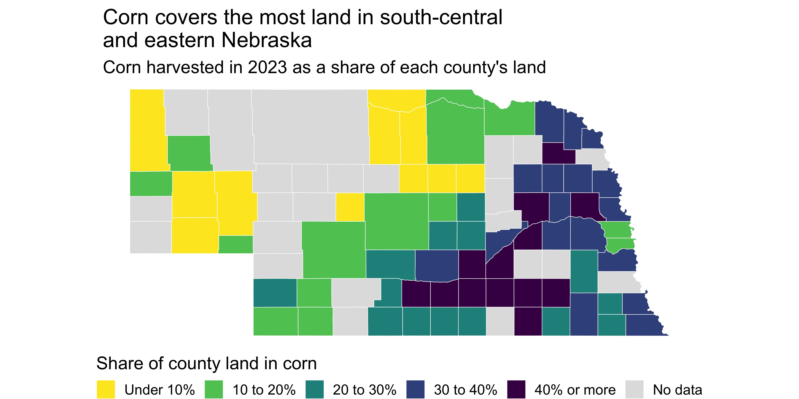
share_class was made earlier in the same document: share cut into five classes, with the counties without a value in a class “No data”.
| Before | After | Map standard item |
|---|---|---|
| Total acres | Share of land, because the message is about where corn dominates | 2 |
| 24 counties missing | All 93 counties, 24 named “No data” | 4 |
| Longitude and latitude axes, grey background | None | 5 |
| Dark default borders | Thin white borders | 6 |
Legend titled acre, a column name |
Legend in plain words | Figure standard 1 |
| Legend beside the map | Legend in one row below the map, where it costs no width | Figure standard 3 |
| Default blue shades | Five classes from a colour-blind-safe scale | 3 |
| No title | A title that states the finding |
The corn file has one row per county and year, 277 rows for four years. Drawn without choosing a year:
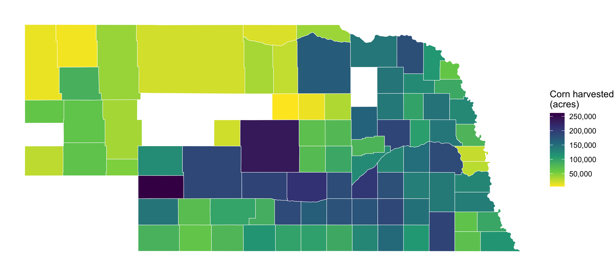
No error, and it looks like a finished map. But each county is drawn up to four times, one shape on top of the other, and the one on top is the last row of that county in the file, which is sorted by year: 2023 for 69 counties, 2022 for 11 counties, 2021 for 4 counties, 2020 for 1 county. The map mixes four years and says nothing about it.
Ask the AI to print the table the map is drawn from, next to the map, with the counts that matter:
places drawn: expected 93, got 93 places drawn more than once: expected 0, got 0 places with a value plus No data: expected 93, got 69 + 24 The map table has one row per county and every county in it. The same lines for corn itself would say 277 places drawn and 192 drawn more than once.
Apply it to any map, yours or the AI’s, by looking at it in the rendered HTML, at the size a reader will see it. Each question has a yes or no answer.
A “no” to any question is something to fix or a reason to choose a different design.
The message is meant to be: “Irrigation wells are concentrated along the Platte River and in the south of the state.”
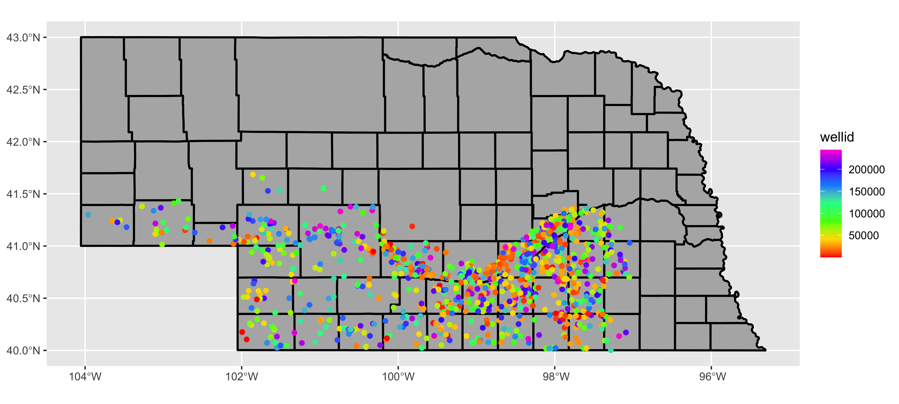
A. What in this map carries information, and what is decoration?
B. Which items of the map standard does it fail?
C. Write the request you would send to fix it.
A. The positions of the wells carry the message. The colour shows wellid, a registration number with no meaning for the message: decoration that the reader will try to interpret. The rainbow scale is also hard for colour-blind readers.
B. Item 5 (longitude and latitude axes and gridlines), item 6 (heavy black borders and dark grey fill compete with the wells; large points hide where they crowd), item 3 (a colour scale for a value that should not be shown at all), and the figure standard’s plain-word legend.
C. Something like: “The message: irrigation wells are concentrated along the Platte River and in the south. The reader: an extension audience. Draw the wells as small points of one colour on light county outlines, with no colour scale and no axes”, followed by the figure standard, the map standard and the closing instructions. A layer of rivers would help a reader who does not know where the Platte runs.
Maps follow the same way of working as everything else (lecture 02-1, “Working with AI on your own research”): you ask, the AI writes into a Quarto document, you render, and you judge the HTML.
For maps, the HTML matters even more:
Every map request ends with the figure standard, the map standard, and then the closing instructions. All three are under Recommended requests.
The AI already knows how to draw any map. Your request supplies what it cannot know:
Using an agent in your editor or terminal?
An agent such as Claude Code can open the files and look for itself. It still cannot know your message or your reader. Write those down before it runs.
What comes back is the “Before” map: total acres, the counties without data missing, default colours and axes. Nothing in the request said otherwise.
In my R project, data/counties.gpkg has the 93 counties of Nebraska
(EPSG 4269), with the county code in countyfp. data/corn_acres.gpkg
has one row per county and year, 2020 to 2023, with corn harvested in
acres in the column acre and the county code in county_code.
The message: in 2023, corn covered the largest share of land in
south-central and eastern Nebraska. The reader: an extension audience
who knows the state but has not seen this data.
Map the 2023 share of each county's land in corn (acres harvested
divided by the county's area in acres), starting from all 93 counties.
Print the table the map is drawn from, with the number of counties
drawn, drawn more than once, with a value, and without one.
[the figure standard, pasted here]
[the map standard, pasted here]
Put the code in my Quarto document analysis/maps.qmd, under the heading
"Corn share map", as R code chunks. Above each chunk, write one
plain-English sentence saying what it does and why. Build every path
with here::here(); no setwd(), no absolute paths. Print each check on
its own line as "name of check: expected X, got Y". Render the document
to HTML.A version of what an AI returns, the code behind the “After” map. You should be able to say which part does what:
ggplot(corn_2023) +
geom_sf(aes(fill = share_class), colour = "white", linewidth = 0.2) +
scale_fill_manual(values = share_colours, name = "Share of county land in corn") +
labs(title = "Corn covers the most land in south-central\nand eastern Nebraska",
subtitle = "Corn harvested in 2023 as a share of each county's land") +
guides(fill = guide_legend(nrow = 1, title.position = "top")) +
theme_void(base_size = 16) +
theme(legend.position = "bottom")ggplot(corn_2023) and geom_sf(aes(fill = share_class)): one layer, the counties, with the share class setting the fillcolour = "white", linewidth = 0.2: thin white borders, the same for every countyscale_fill_manual(): the five colours and the grey for “No data”labs(): the title and subtitle; guides() and theme(legend.position = "bottom"): the legend in one row below the map; theme_void(): no axes, no gridlines, no backgroundCopy one, then replace every <...> with what you know: the message, the reader, what you found in the data. Every map request ends with the figure standard, the map standard and the closing instructions.
The lines that end every request for code. Replace the two blanks; leave “expected X, got Y” as it is, because it tells the AI how to print each check:
Put the code in my Quarto document <path to your .qmd>, under the
heading "<heading>", as R code chunks. Above each chunk, write one
plain-English sentence saying what it does and why. Build every path
with here::here(); no setwd(), no absolute paths. Print each check on
its own line as "name of check: expected X, got Y". Render the document
to HTML.A chat assistant cannot render: paste its chunks into your .qmd and render it yourself. An agent in your editor or terminal can do every step.
Paste this into every map request, after the figure standard from lecture 04-1 and before the closing instructions:
Every map must also meet this standard:
1. If the message is not about where, say so and suggest a chart
instead.
2. Map a rate rather than a total when places differ in size and the
message is about intensity; say which you mapped and why.
3. The colour scale suits the value: one hue from light to dark for
amounts; two hues diverging from a neutral middle at the midpoint
given in my request for values above or below it; distinct hues for
categories. Readable by colour-blind readers.
4. Start from the full layer of places. Places with no data inside the
mapped area drawn in a grey that the colour scale does not use (light
grey, or a darker grey on a diverging scale whose middle is nearly
white) and labelled "No data" in the legend; never left out, never
shown as zero. Raster cells outside the area, which were never
measured, are transparent.
5. No longitude and latitude axes or gridlines, unless the reader needs
to read coordinates.
6. Boundaries thin and light; the layer that carries the message drawn
on top.
7. Several maps of the same variable share one colour scale.
8. No scale bar or north arrow unless distance or direction matters to
the message.
9. Item 7 of the figure standard does not apply: a map's shape is the
place's shape.Keep your own copy, next to your copy of the figure standard, and add to it each time you find something the AI keeps getting wrong.
In my R project, <path to the layer of places> has <the places>
(<CRS>), and <path to the data> has one row per <what one row is>. The
map shows <column>, which means <...> and is measured in <units>, for
<which year or subset>.
The message: <the one sentence the reader should take away>.
The reader: <who will see it, and what they already know>.
For a value with a midpoint, the midpoint is <the midpoint>.
Draw <three> different designs for this message, one after another,
for example <a total and a rate>, or <a continuous scale and classes>.
Under each, write one sentence saying what that design makes easy to
see and what it hides. Do not choose one for me. Print the table the
maps are drawn from, with the number of places drawn, drawn more than
once, with a value, and without one.
<the figure standard>
<the map standard>
Put the code in my Quarto document <path to your .qmd>, under the
heading "<heading>", as R code chunks. Above each chunk, write one
plain-English sentence saying what it does and why. Build every path
with here::here(); no setwd(), no absolute paths. Print each check on
its own line as "name of check: expected X, got Y". Render the document
to HTML.Then choose one, and write in your document which one and why, in terms of the message.
The code below draws a map. Its message should be: <one sentence>. The
reader is <who>.
Change the map so that the message is the first thing a reader sees.
Keep the original map, and put the new one below it. Above the new one,
list each change and why, in plain English.
<paste the code here>
<the figure standard>
<the map standard>
Put the code in my Quarto document <path to your .qmd>, under the
heading "<heading>", as R code chunks. Above each chunk, write one
plain-English sentence saying what it does and why. Build every path
with here::here(); no setwd(), no absolute paths. Print each check on
its own line as "name of check: expected X, got Y". Render the document
to HTML.The code below draws a map. Its intended message is: <one sentence>.
The reader is <who>.
Do not change the code. Answer each question with yes or no and one
sentence of explanation:
1. Can someone who has not seen the data state the message within a
few seconds?
2. Is the message about where?
3. Does the colour scale match the kind of value?
4. Are places with no data visible and named, and distinguishable from
low values?
5. Does every colour carry information?
6. Is everything on the map needed for the message?
7. Does it meet each item of the figure standard and the map standard?
<the figure standard>
<the map standard>
<paste the code here>The map under the heading "<heading>" is drawn from the table
<table name>. Below the map, print: the number of places drawn
(I expect <number>), the number drawn more than once (I expect 0), the
number with a value and without one, and the CRS of every layer on the
map. Then print the five places with the highest and the five with the
lowest value, so I can check them against the colours on the map.
Put the code in my Quarto document <path to your .qmd>, under the
heading "<heading>", as R code chunks. Above each chunk, write one
plain-English sentence saying what it does and why. Build every path
with here::here(); no setwd(), no absolute paths. Print each check on
its own line as "name of check: expected X, got Y". Render the document
to HTML.| You decide | The AI can write |
|---|---|
| The message, and whether it is about where | Any map, and a chart instead |
| Totals or rates | The calculation of the rate |
| The kind of colour scale, and the midpoint | The scale and its colours |
| That every place must be on the map | The join to the full layer of places |
| Which design to use, and why | Two or three alternatives |
| Whether the map is right | The table and counts printed next to it |
Every map: write the message and the reader first. Ask for alternatives, with the figure standard, the map standard and the closing instructions. Render, read the HTML with the checklist, and check the table behind the map.